Jurassic Park

Jurassic Park II: The Lost World

Jurassic Park III

Jurassic World

Jurassic World II: Fallen Kingdom

Jurassic World III: Dominion

Jurassic World IV: Rebirth

Caminando Entre Dinosaurios
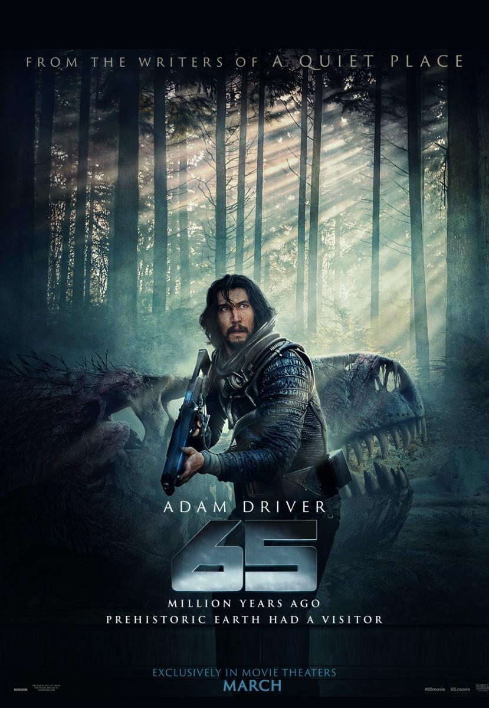
65

Primitive War
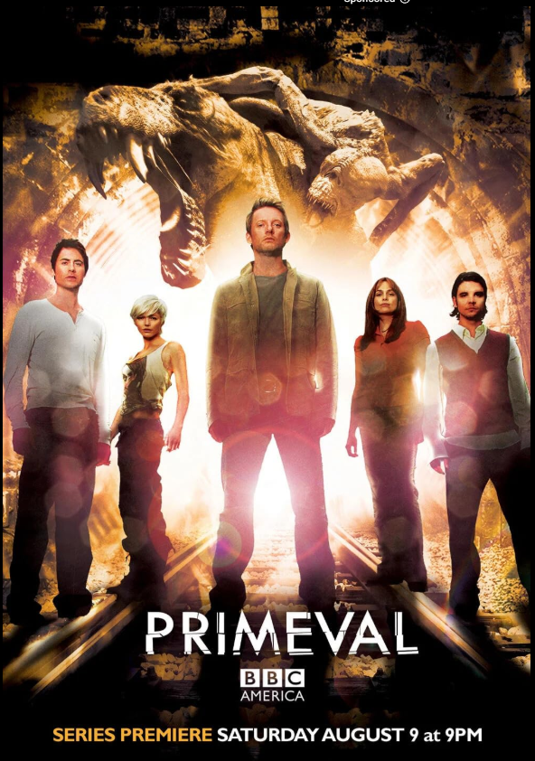
Primeval
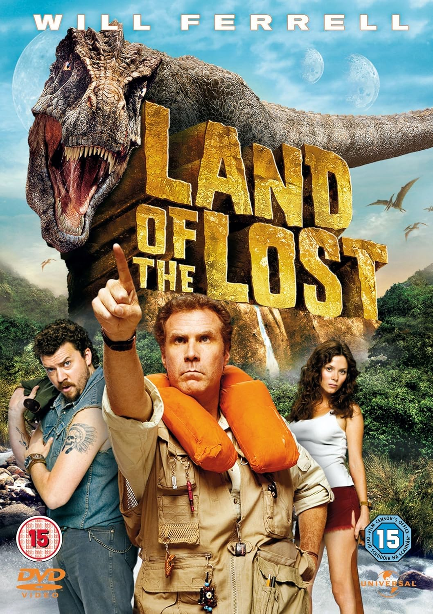
Tierra de los Perdidos

Ark
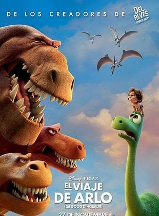
El Viaje de Arlo
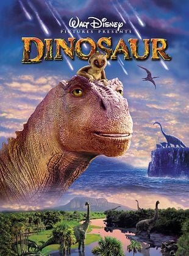
Dinosaur
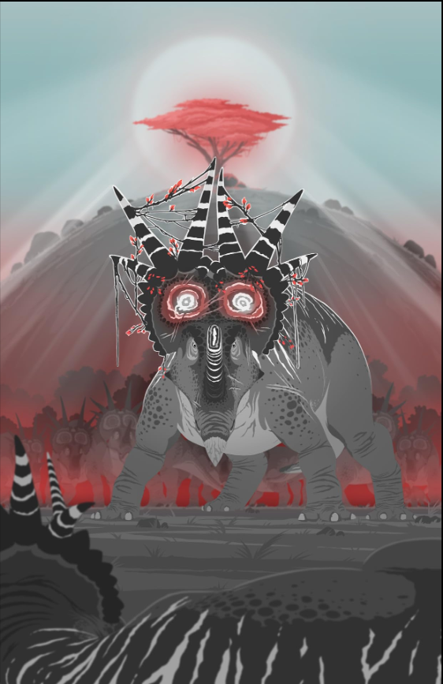
Dinosauria
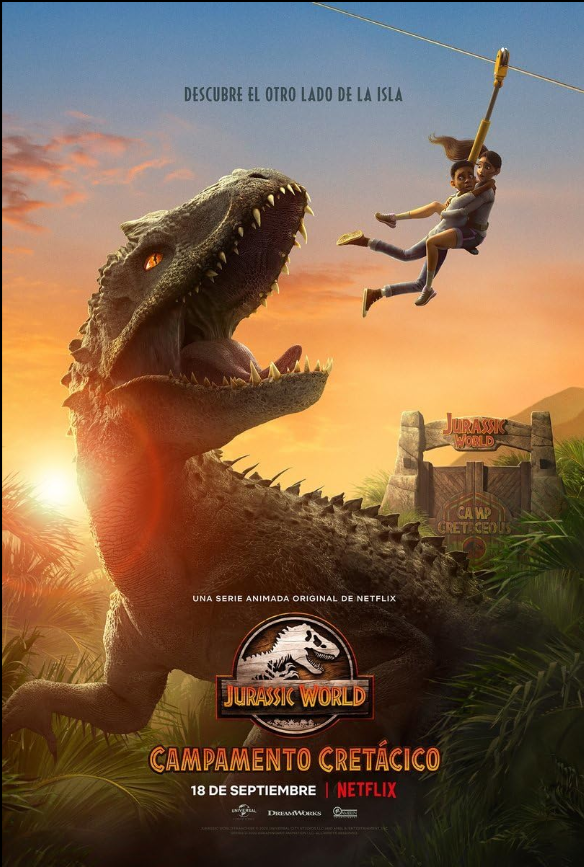
Jurassic World: Campamento Cretacico
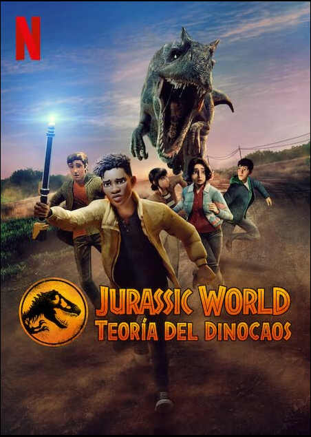
Jurassic World: Teorida del Dinocaos
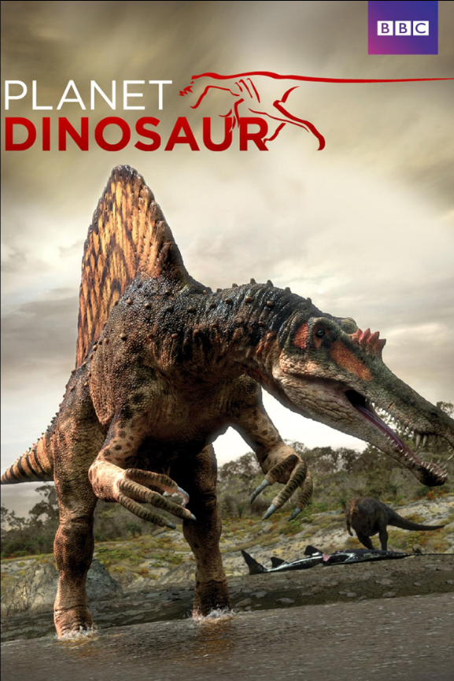
Planeta Dinosaurio
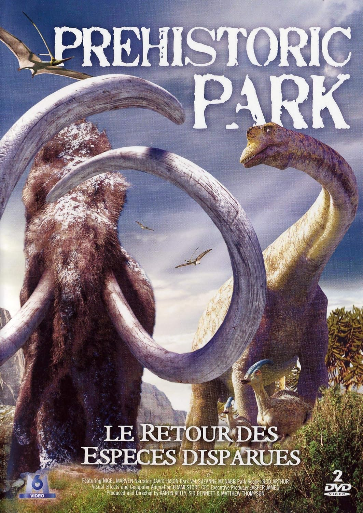
Parque Prehistorico
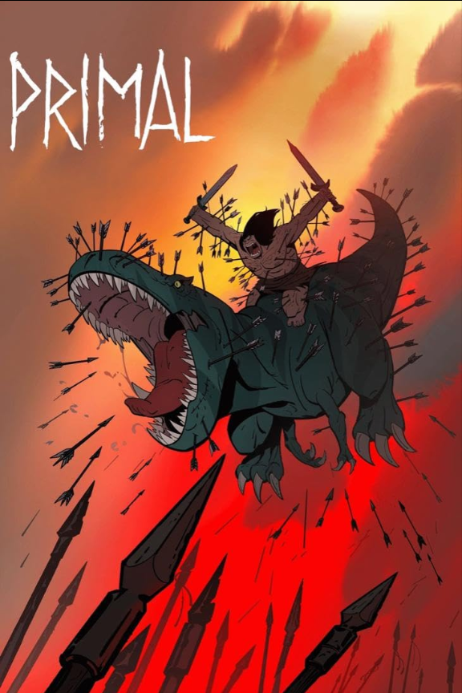
Primal
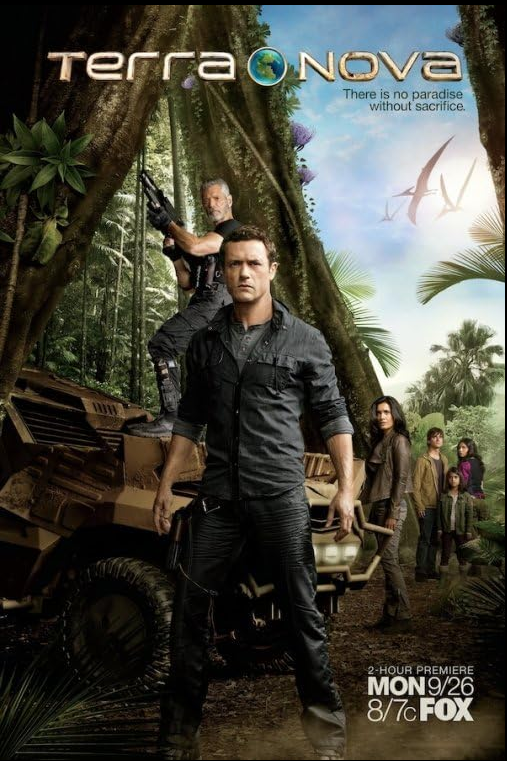
Terranova
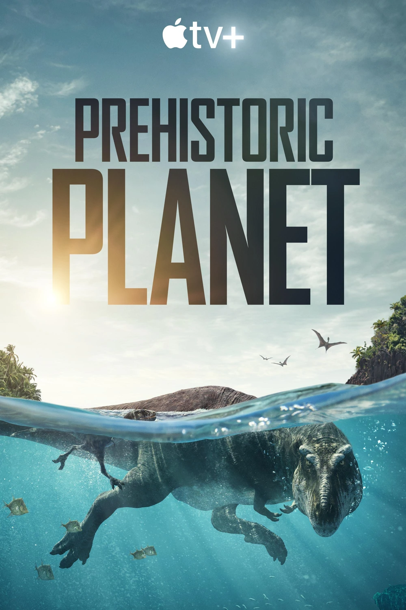
Planeta Prehistorico
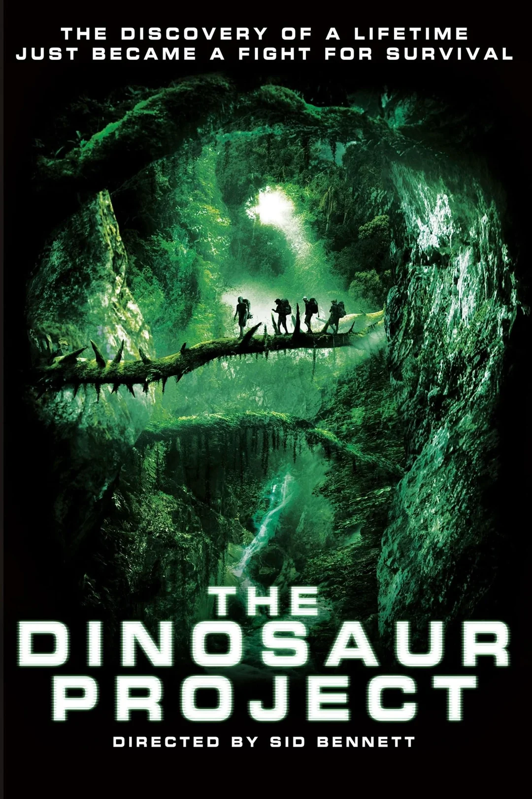